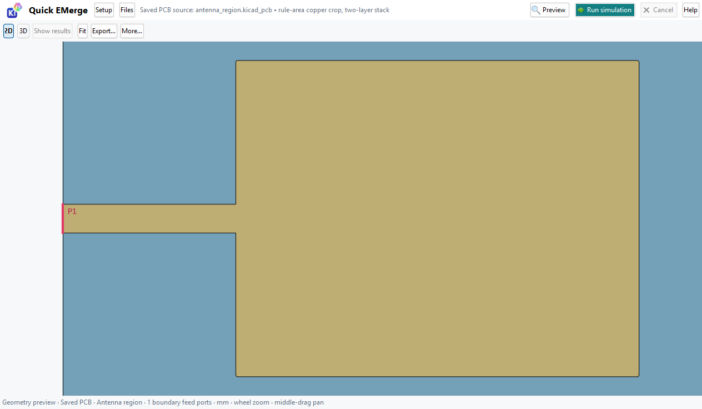
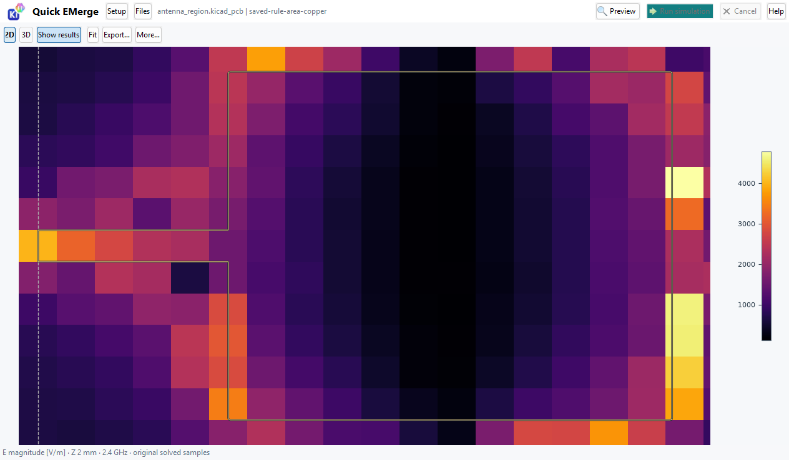
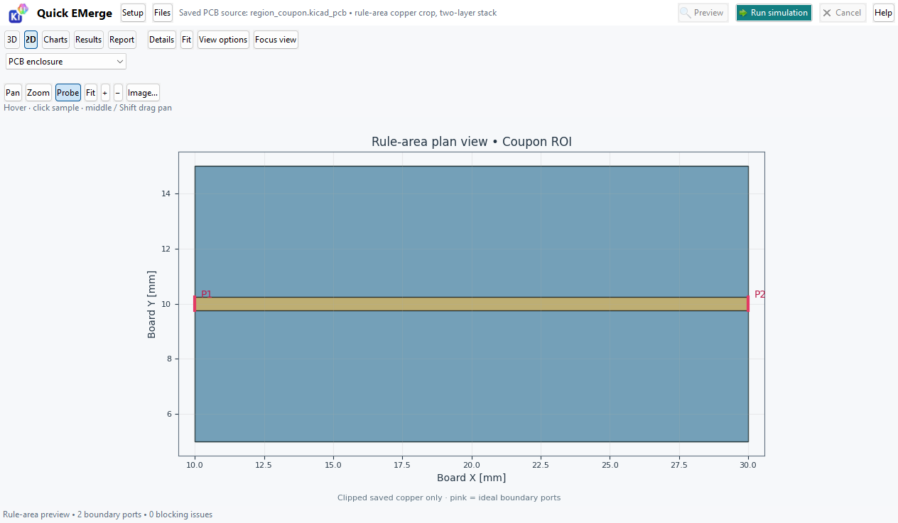
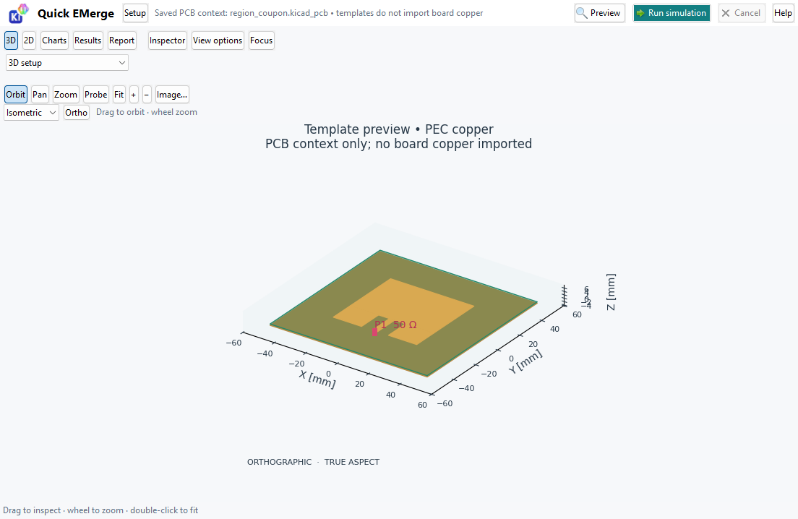
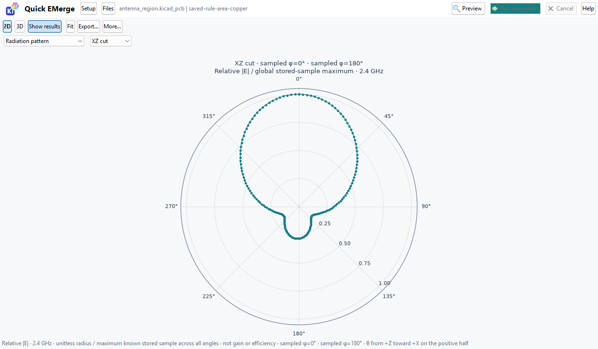
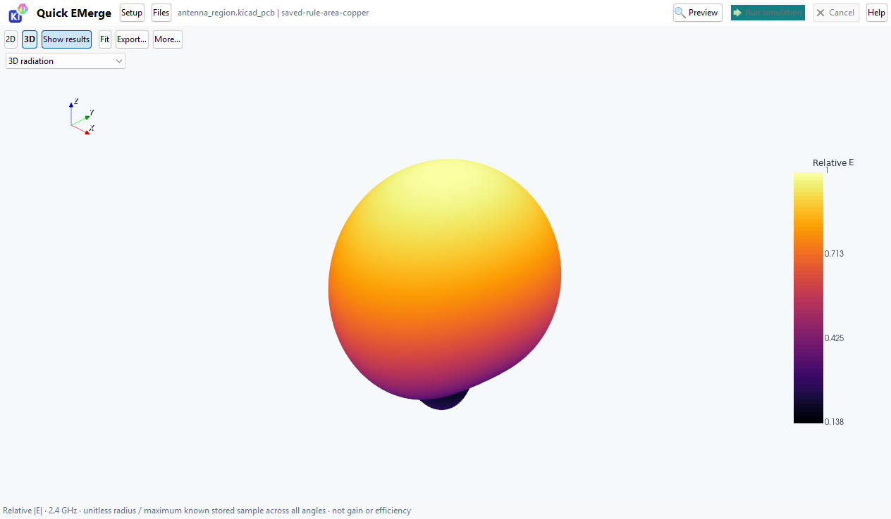
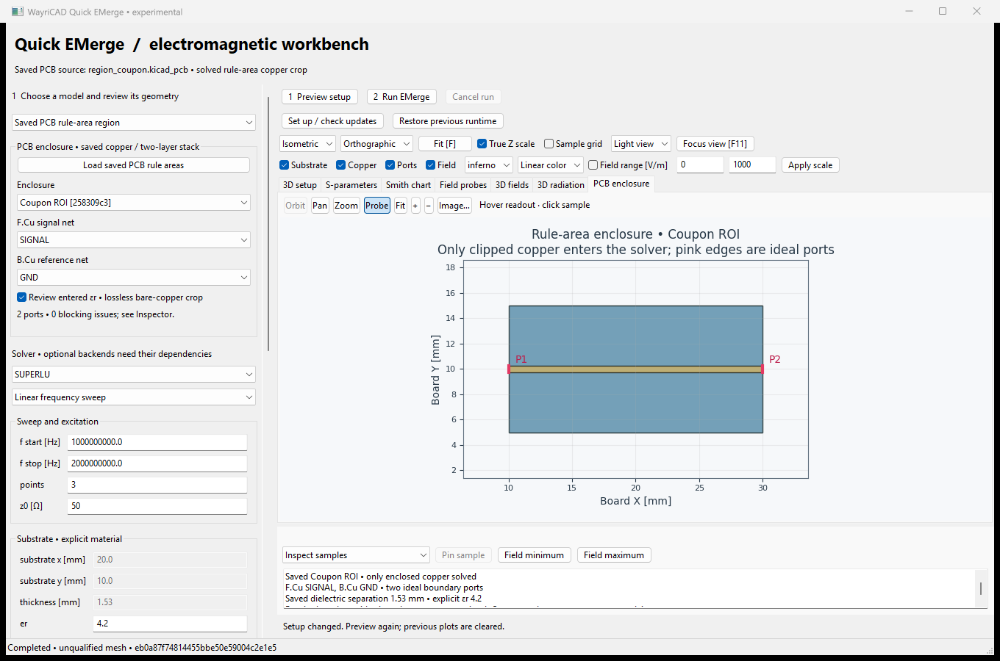

Launching Quick EMerge from KiCad opens the saved PCB and its rule areas. Choose the area enclosing the antenna and feed, its F.Cu signal and B.Cu reference net, and review materials before Preview and Run. The two-layer crop includes the actual enclosed copper; components and the exterior board are omitted. Parametric templates are optional separate studies.

Windows native capture, 2026-11-01, Python 3.11.5 / wxPython 4.3.2 / VTK 9.7.1; Matplotlib 2D view and KiCad 10.0.6 native extraction. Public synthetic antenna_region fixture: 28 × 22 mm copper patch, 2 mm feed, 48 × 40 mm rule area, one ideal boundary feed port. Canvas 1264 × 639 in a 1264 × 738 client area. Geometry preview only; no FEM solve, antenna tuning or qualification. Source unchanged; no private data, personal paths or redactions.

The same source was solved with EMerge 3.0.0b9 / SuperLU at 2.3, 2.4 and 2.5 GHz. This native capture shows the original 21 × 21 E-magnitude samples at 2.4 GHz, Z = 2 mm; thin outlines follow the actual signal copper. Pixels retain the coarse samples rather than inventing smooth detail. This is end-to-end execution evidence only, not mesh/boundary convergence or qualified physical antenna performance. Runtime, source immutability and privacy scope match the geometry capture above.
The geometry is the viewport: no graph frame, ticks or axes. Fit focuses the signal copper and feed with equal physical X/Y scale. More → Fit full study region shows the complete crop. Zoom and camera focus change the view only, never the simulation domain. Cursor coordinates and mm units appear below the view.
The primary workflow is Setup → Preview geometry and ports → Run simulation. Choose 2D / 3D; toggle Show results to compare geometry with available solved fields. More holds charts, result summary, probes and specialist controls. Export… offers PNG plots and HTML/PDF reports; Files saves or loads setups and results.
Setup opens Geometry, Physics and Solve settings and closes to reclaim the canvas. More → Probe details opens the inspector below the view at no more than 30% height. More → Focus view hides panels temporarily and restores their previous visibility. Preview, Run simulation, Cancel and Help remain available, with progress and errors in the status bar. Hiding settings preserves the study and reviewed geometry.

Windows source capture, 2026-10-30, Python 3.14 / wxPython 4.2.5, Matplotlib software rendering and KiCad 10.0.6 extraction. Repository region_coupon clipped saved copper and two planned ideal boundary ports; no FEM solve. Source unchanged; no private data, personal paths or redactions. Plot canvas 1264 × 549 in a 1280 × 800 window.

Windows source-window capture, 2026-10-29, Python 3.14 / wxPython 4.2.5 / Matplotlib software rendering. Repository fixture and default patch template; no solver execution, private data, personal paths or redactions. This capture predates the Files button.
Files → Save setup… opens a file chooser in the saved PCB's project folder. Choose a location and name; a missing .json extension is added. Load setup restores geometry, physics, material, mesh, sweep and solver controls. Preview is required again before Run. A changed board asks for confirmation, and region setups must still match a real rule area and signal/reference nets. Missing choices are reported rather than silently replaced. Original schema-1 setups remain readable.
Save results… stores original computed arrays and source evidence in a chosen JSON file. Load results… opens the saved values in the read-only simulation viewer without rerunning the solver. Changed or moved source boards are labelled as historical evidence. Setup and result files are different; use the corresponding command. Cancelling a chooser leaves the current setup untouched.
Open this offline guide with Help or F1 in the workbench. Use the contents to jump to a task.
Quick EMerge is a read-only testing beta for exploratory electromagnetic studies. It reads a saved PCB; it does not write the board or project. Unsaved PCB Editor changes are excluded. Numerical convergence and physical accuracy are not established by a successful run.
The area outline crops the full two-layer column, regardless of its KiCad keepout permissions. Concavity and holes are retained. Copper crossing the crop can form an ideal boundary port where reference copper covers the full port span; a natural board edge does not create a port. Review the numbered ports in Preview. The region workflow supports 1–8 ideal ports and blocks unsupported geometry, including internal drilled features, unfilled zones, unselected cut conductors and incomplete returns. It does not import a general multilayer board, via barrels, components or interior feeds. The separate via template does not change these limits.
New studies start with 81 frequency samples, an 81 × 81 field grid, and 2° radiation angles (91 × 181). Existing saved setups keep their frequency and field-grid settings. Under 3 Solve → Output sampling, Use dense sampling selects 81 linear FEM frequencies and an 81 × 81 field grid without changing mesh settings. A 2.4–2.6 GHz linear sweep then has 2.5 MHz spacing; a smaller span gives finer frequency spacing. More frequency solves take longer.
The frequency sweep determines the frequencies evaluated for the network response. The FEM mesh discretizes the model for the solve: refining it affects cost and may affect accuracy. Field grids and radiation angular samples are post-processing samples of the computed fields, not extra FEM solves and not the FEM mesh. Increasing display samples does not prove mesh convergence. Fields remain tied to their recorded frequency and excitation; clicking another chart frequency does not recompute them.
The 2° radiation grid applies to driven antenna and array results. Scattering studies retain a 6° bistatic RCS grid (31 × 61). Local mesh refinement runs the requested fixed number of passes; it does not automatically qualify the full response. The adaptive AAA response tolerance controls frequency sampling, not mesh-convergence acceptance.
Choose 2D / 3D and use Show results for solved fields. Geometry stays available with the toggle off. The field/radiation selector appears only when necessary. More → Viewport controls restores Orbit, Pan, Zoom, Probe and camera settings; Fit restores the view. More → Display settings… controls visibility, projection, color scale and display aspect without changing solver geometry. Probe selects original samples and links views. The Inspector offers pinned samples, extrema and CSV export; a line cut uses nearest original samples and is not continuous interpolation. Radiation radius is normalized relative field magnitude, not gain or physical distance.
More → Result charts shows network results; More → Result summary opens the numerical table. Export… offers Save 2D plot (PNG)…, Save 3D view (PNG)…, Preview report, Export HTML report… and Export PDF report…; PDF requires ReportLab. PNG is a static figure of the current view, while the native 3D view remains interactive. Choosers start in the board project folder and allow a different destination; missing extensions are added. Plots check source/setup before and after rendering and atomically replace the destination only on success. Unavailable fields and reports stay disabled until their data exist. Reports include assumptions, source checks, selected probes and limitations. New results replace previous report state. Source or configuration changes can reject stale exports.
For a result with radiation samples, choose More → 2D radiation pattern or More → 3D radiation pattern. The view selector also exposes radiation with Show results enabled. Switching 2D / 3D keeps radiation selected and preserves the view cameras.
The actual sampled plane is printed when a nearby unambiguous plane is used. Unknown samples, missing halves and uncovered directions remain gaps. Both views use the same maximum known stored magnitude across all angles. Radius is relative |E|, not length, dBi gain, efficiency or radiated power. Line segments join stored samples; probes select only original angular samples. Wheel zoom is radial-only in 2D; Fit restores the complete pattern. The native 3D surface supports orbit, pan and zoom.
Export… saves the current 2D pattern or 3D camera image. HTML/PDF reports include the 3D surface, available principal-plane cuts and a separate radiation-probe table verified against original indices, angles and frequency. Cached probe values are recomputed; unknown values remain explicit. Missing radiation leaves these views disabled with an explanation.


Windows native captures, 2026-11-01, Python 3.11.5 / wxPython 4.3.2 / VTK 9.7.1. Both show the actual 2.4 GHz result of the public synthetic antenna-region study: 91 theta × 181 phi samples at 2° spacing. This is coarse three-frequency execution evidence only; mesh/boundary convergence and physical antenna performance are not qualified. Source bytes are unchanged. No private data, personal paths or redactions.
First-open managed setup needs internet, Python 3.10–3.13 and 3 GiB free. Desktop dependencies include a complete wxPython/Matplotlib, VTK and ReportLab environment. EMerge runs in a separate managed environment. Candidate updates pass dependency and compatibility checks before activation; a failed update retains the working runtime. Run settings provide setup/retry and restore-previous-runtime controls. Existing working packages are not upgraded in place.
Earlier beta layout (paths redacted):

For supported studies, limits and dated evidence see the user guide, capability inventory and validation evidence.
Report setup summaries show active geometry, material, boundary, mesh and sampling settings. Saved-PCB dimensions come from the recorded region. Complete configuration, including inactive defaults, remains in collapsed HTML and JSON evidence; PDF reports keep the active summary.